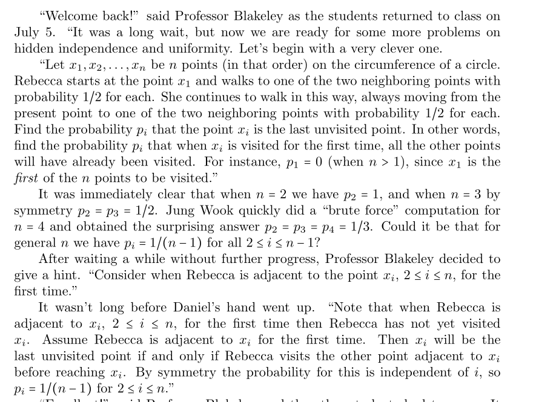

2025_11_20
last updated: Dec 07, 2025
Independent Aftermath 1
- today I read the first question in the Chapter 8 'independent aftermath' in the book "Conversational problem Solving". I wonder why is the probability "symmetric" for different $x_i$.

- I think the reason is that $p_i$ is the probability of Rebecca (in any ways) going to the one of the adjacent of $x_i$ then moving to the other adjacent of $x_i$, the length of which adds up to the same number n-1 all $x_i$, $2\leq i \leq n$
- Regarding the question above, I think the reason is that since Rebecca will eventually move to an adjacent of $x_i$, the probability of this event is 1. Therefore, conditioning on this event yields the same probability as $p_i$. (18:25)
-
Graph
- In the proof that an Euler walk exists if and only every vertex has an even degree (Theorem 1.8.1 in https://www.math.uni-hamburg.de/home/diestel/books/graph.theory/preview/Ch1.pdf), a subtle step is the following: if an edge is in $G-E(W)$, then there exists (possible another) edge $e$ incident to a vertex in in $W$.
- Then, the connected component $C$ of $e$ in $G'$ is a smaller connected graph with even degrees. (It has to have fewer edges than $G$ does because $G'$, where this component lies, is already much short of edges than $G$.) So, by induction hypothesis, $C$ has an Euler walk. Concatenation of it with $W$ finishes the proof.